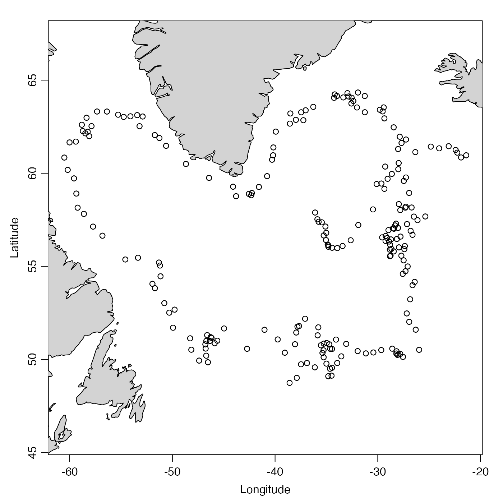

This holds data from ARGO 6900388 in the North Atlantic.
The netcdf file used by read.argo() to create this argo
object was downloaded from
ftp://ftp.ifremer.fr/ifremer/argo/dac/bodc/6900388/6900388_prof.nc
on 2020 June 24.
Below is the official citation (note that this DOI has web links for downloads): Argo (2017). Argo float data and metadata from Global Data Assembly Centre (Argo GDAC) - Snapshot of Argo GDAC of July, 8st 2017. SEANOE. doi: 10.17882/42182#50865
Other datasets provided with oce:
adp,
adv,
amsr,
cm,
coastlineWorld,
ctdRaw,
ctd,
echosounder,
landsat,
lisst,
lobo,
met,
ocecolors,
rsk,
sealevelTuktoyaktuk,
sealevel,
section,
topoWorld,
wind,
xbt
Other things related to argo data:
[[,argo-method,
[[<-,argo-method,
argo-class,
argoGrid(),
argoNames2oceNames(),
as.argo(),
handleFlags,argo-method,
plot,argo-method,
read.argo(),
subset,argo-method,
summary,argo-method
#> Argo Summary #> ------------ #> #> * Source: "/Users/kelley/git/oce/create_data/argo/6900388_prof.nc" #> * id: "6900388" #> * feature type: "trajectoryProfile" #> * Profiles: 210 delayed; 0 adjusted; 13 realtime #> * Time ranges from 2005-10-29 13:57:42 to 2011-11-27 17:58:39 with 223 samples and mean increment 10.00075 day #> * Data Overview #> #> Min. Mean Max. Dim. NAs OriginalName #> latitude [°N] 48.743 56.715 64.335 223 0 LATITUDE #> longitude [°E] -60.52 -37.077 -21.385 223 0 LONGITUDE #> pressure [dbar] 3.5 521.31 6534.6 56x223 106 PRES #> pressureAdjusted [dbar] 3.6 520.34 1778.9 56x223 874 PRES_ADJUSTED #> pressureAdjustedError [dbar] 2.4 2.4 2.4 56x223 874 PRES_ADJUSTED_ERROR #> salinity [PSS-78] 0 34.911 47.899 56x223 106 PSAL #> salinityAdjusted [PSS-78] 32.85 34.935 35.842 56x223 840 PSAL_ADJUSTED #> salinityAdjustedError [PSS-78] 0.01 0.01 0.01 56x223 840 PSAL_ADJUSTED_ERROR #> temperature [°C, ITS-90] -1.564 6.1216 55.997 56x223 106 TEMP #> temperatureAdjusted [°C, ITS-90] -1.564 6.0916 14.914 56x223 837 TEMP_ADJUSTED #> temperatureAdjustedError [°C, ITS-90] 0.002 0.002 0.002 56x223 837 TEMP_ADJUSTED_ERROR #> #> * Data-quality Flag Scheme #> #> name "argo" #> mapping list(not_assessed=0, passed_all_tests=1, probably_good=2, probably_bad=3, bad=4, changed=5, not_used_6=6, not_used_7=7, estimated=8, missing=9) #> default c(0, 3, 4, 9) #> #> * Data-quality Flags #> #> pressure: "1" 12327, "4" 55 #> pressureAdjusted: "2" 11614 #> salinity: "1" 12348, "4" 34 #> salinityAdjusted: "2" 11648 #> temperature: "1" 12362, "4" 20 #> temperatureAdjusted: "2" 11651 #> #> * Processing Log #> #> - 2020-11-09 16:05:39 UTC: `create 'argo' object` #> - 2020-11-09 16:05:39 UTC: `initializeFlagScheme(object, name="argo", mapping=list(not_assessed=0,passed_all_tests=1,probably_good=2,probably_bad=3,bad=4,changed=5,not_used_6=6,not_used_7=7,estimated=8,missing=9)), default=c(0,3,4,9))` #> - 2020-11-09 16:05:39 UTC: `read.argo(file="/Users/kelley/git/oce/create_data/argo/6900388_prof.nc")`